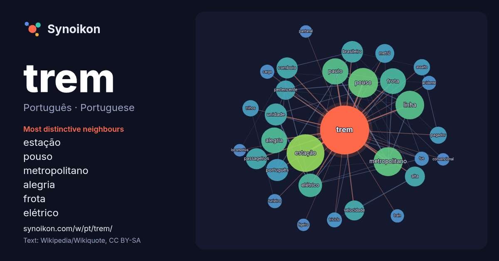

Português · Portuguese · word of the day list
trem
“train” · The words found around it in 683 instances from Portuguese Wikipedia, Wikiquote.

Most distinctive neighbours
- estação 42×
- pouso 39×
- metropolitano 37×
- alegria 30×
- frota 27×
- elétrico 25×
- comboio 20×
- linha 20×
- passageiros 18×
- metrô 16×
- velocidade 15×
- unidade 15×
- pagador 14×
- português 14×
- paulo 13×
- alta 13×
- trilhos 13×
- assalto 12×
- triciclo 11×
- pertencente 11×
× = how many times more often than in general Portuguese Wikipedia text.
Most frequent neighbours
- estação 64
- pouso 40
- metropolitano 38
- linha 37
- paulo 31
- alegria 30
- frota 30
- elétrico 25
- brasil 22
- português 22
- unidade 22
- brasileiro 21
- rio 21
- comboio 20
- passageiros 20
- alta 18
- velocidade 18
- pertencente 17
- metrô 16
- série 16
In context
- faroeste, veja The Iron Horse. Para outros significados, veja Trem (desambiguação). Trem (português brasileiro) ou comboio (português europeu) (do francês Wikipedia snippets · Trem
- metropolitana, geralmente maior que a do tranvia e menor que a do trem (comboio) e a do metrô. O trem ligeiro permite a conexão entre zonas pedonais em núcleos Wikipedia snippets · Veículo leve sobre trilhos
- Trem Desportivo Clube, ou simplesmente Trem, é um clube multidesportivo brasileiro sediado na cidade de Macapá, capital do estado do Amapá. Se destaca Wikipedia snippets · Trem Desportivo Clube
- Trem urbano, trem de subúrbio, trem suburbano, trem metropolitano (português brasileiro) ou comboio urbano, comboio de subúrbio, comboio suburbano, comboio Wikipedia snippets · Trem suburbano
- Trem Metropolitano de São Paulo é o sistema de transporte suburbano implementado na Região Metropolitana de São Paulo, atendendo 20 dos seus 39 municípios Wikipedia snippets · Trem Metropolitano de São Paulo
- Trem da morte era um trem da Bolívia que percorreu a linha férrea (estrada de ferro) entre as cidades de Puerto Suarez e Santa Cruz de la Sierra. O transporte Wikipedia snippets · Trem da Morte
- The Mystery of the Blue Train (O Trem Azul ou O Mistério do Trem Azul, no Brasil / O Mistério do Comboio Azul, em Portugal) é um romance policial de Agatha Wikipedia snippets · The Mystery of the Blue Train
- Trem mexicano ou mexican train é um jogo de dominó. O objetivo do jogo é usar todas as pedras da mão em uma ou mais linhas, ou trens, que nascem de um Wikipedia snippets · Trem mexicano
More Portuguese words
- arte
- ciência
- clima
- comida
- coração
- cão
- deus
- dinheiro
- família
- força
- gato
- história
- língua
- morte
- natureza
- ouro
- ponte
- saúde
- trabalho
- verdade
- vida
- água
Precomputed on 2026-10-09 with default settings (±5 words, medium corpus). The interactive map can refresh it with live data.